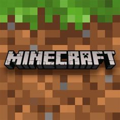

Neste site iremos observar o trabalho feito por 3 alunos, com o tema que irá falar sobre um jogo muito famoso mundialmente, possuindo o nome de Minecraft, que vai conter curiosidades,desafios e muito mais sobre esse jogo incrível e maravilhoso
Mas primeiro como funciona o Minecraft? O jogo se resume em três pilares: Coletar e Criar (Mine & Craft): Você quebra blocos do cenário (terra, pedra, madeira) para conseguir materiais e os combina em uma bancada para criar ferramentas, armas e construções. O Ciclo do Dia e da Noite: Durante o dia, o mundo é pacífico e você aproveita para explorar e construir. À noite, o escuro faz surgir monstros (como Zumbis e Creepers) que tentam te atacar. Escolha de Estilo: Você pode jogar no Modo Sobrevivência (onde precisa gerenciar sua vida, fome e se defender) ou no Modo Criativo (onde tem blocos infinitos, vida imortal e pode voar para construir o que quiser).
